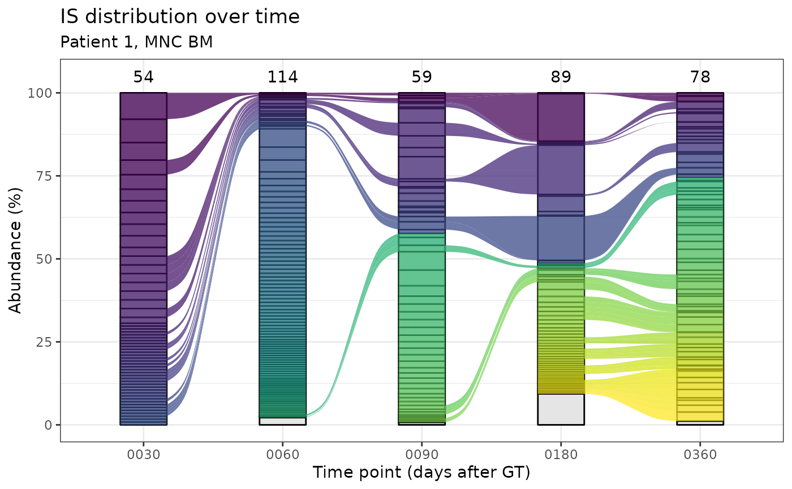

Alluvial plots for IS distribution in time.
Source:R/plotting-functions.R
integration_alluvial_plot.Rd![[Stable]](figures/lifecycle-stable.svg) Alluvial plots allow the visualization of integration sites distribution
in different points in time in the same group.
This functionality requires the suggested package
ggalluvial.
Alluvial plots allow the visualization of integration sites distribution
in different points in time in the same group.
This functionality requires the suggested package
ggalluvial.
Usage
integration_alluvial_plot(
x,
group = c("SubjectID", "CellMarker", "Tissue"),
plot_x = "TimePoint",
plot_y = "fragmentEstimate_sum_PercAbundance",
alluvia = mandatory_IS_vars(),
alluvia_plot_y_threshold = 1,
top_abundant_tbl = TRUE,
empty_space_color = "grey90",
...
)Arguments
- x
A data frame. See details.
- group
Character vector containing the column names that identify unique groups.
- plot_x
Column name to plot on the x axis
- plot_y
Column name to plot on the y axis
- alluvia
Character vector of column names that uniquely identify alluvia
- alluvia_plot_y_threshold
Numeric value. Everything below this threshold on y will be plotted in grey and aggregated. See details.
- top_abundant_tbl
Logical. Produce the summary top abundant tables via top_abund_tableGrob?
- empty_space_color
Color of the empty portion of the bars (IS below the threshold). Can be either a string of known colors, an hex code or
NA_characterto set the space transparent. All color specs accepted in ggplot2 are suitable here.- ...
Additional arguments to pass on to top_abund_tableGrob
Details
Input data frame
The input data frame must contain all the columns specified in the
arguments group, plot_x, plot_y and alluvia. The standard
input for this function is the data frame obtained via the
compute_abundance function.
Plotting threshold on y
The plotting threshold on the quantification on the y axis has the
function to highlight only relevant information on the plot and reduce
computation time. The default value is 1, that acts on the default column
plotted on the y axis which contains a percentage value. This translates
in natural language roughly as "highlight with colors only those
integrations (alluvia) that at least in 1 point in time have an
abundance value >= 1 %". The remaining integrations will be plotted
as a unique layer in the column, colored as specified by the argument
empty_space_color.
Customizing the plot
The returned plots are ggplot2 objects and can therefore further modified as any other ggplot2 object. For example, if the user decides to change the fill scale it is sufficient to do
NOTE: if you requested the computation of the top ten abundant tables and you want the colors to match you should re-compute them
A note on strata ordering
Strata in each column are ordered first by time of appearance and secondly in decreasing order of abundance (value of y). It means, for example, that if the plot has 2 or more columns, in the second column, on top, will appear first appear IS that appeared in the previous columns and then all other IS, ordered in decreasing order of abundance.
See also
Other Plotting functions:
CIS_volcano_plot(),
HSC_population_plot(),
circos_genomic_density(),
fisher_scatterplot(),
sharing_heatmap(),
sharing_venn(),
top_abund_tableGrob(),
top_cis_overtime_heatmap()
Examples
data("integration_matrices", package = "ISAnalytics")
data("association_file", package = "ISAnalytics")
aggreg <- aggregate_values_by_key(
x = integration_matrices,
association_file = association_file,
value_cols = c("seqCount", "fragmentEstimate")
)
abund <- compute_abundance(x = aggreg)
alluvial_plots <- integration_alluvial_plot(abund,
alluvia_plot_y_threshold = 0.5
)
ex_plot <- alluvial_plots[[1]]$plot +
ggplot2::labs(
title = "IS distribution over time",
subtitle = "Patient 1, MNC BM",
y = "Abundance (%)",
x = "Time point (days after GT)"
)
print(ex_plot)
